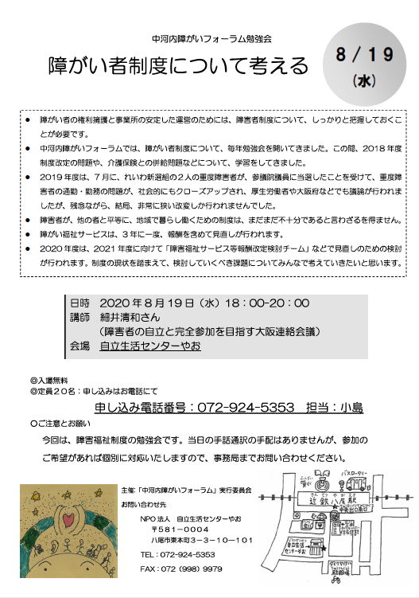
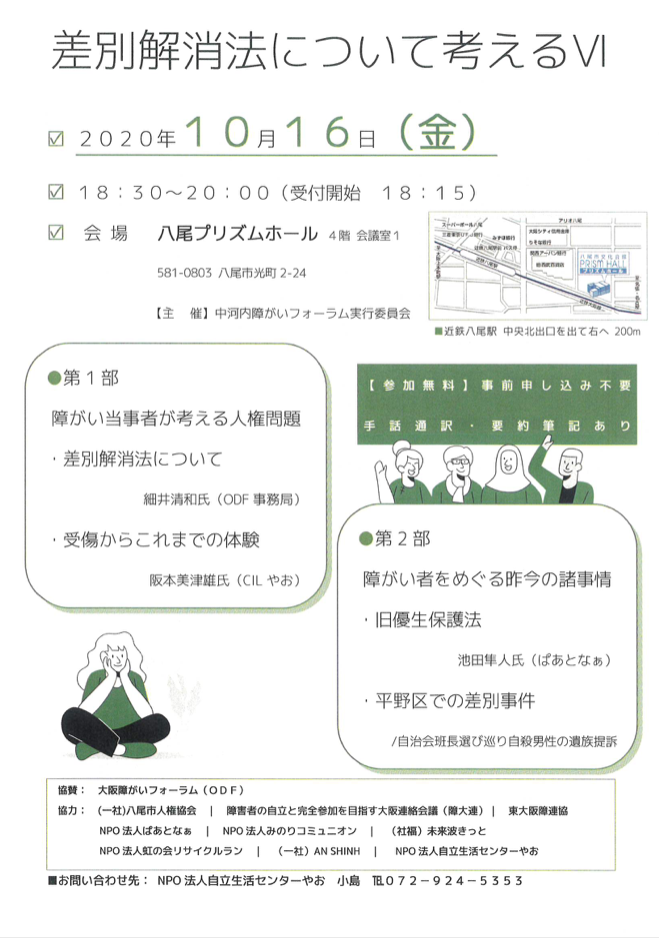

ODF
.
中河内ブロック
ホーム
中河内障がいフォーラムとは
取組みと活動
構成団体・メンバー
お問い合わせ
ODF
.
中河内ブロック
MENU
ホーム
取組みと活動
中河内障がいフォーラムとは
構成団体・メンバー
お問い合わせ
取り組みと活動
２０２０年度
2020年度
2019年度
2018年度
2017年度
2016年度
2015年度
2014年度
2013年度
2012年度
2011年度
2010年度
2009年度

障がい児・者制度について考える
2020.08.19 wed
障がい児・者制度について考える
〜コロナ関連を中心に〜
細井 清和氏
大阪障がいフォーラム 事務局
資料を見てみる

差別解消法について考えるⅥ
2019.10.16 fri
差別解消法について考えるⅥ
第１部「障がい当事者が考える人権問題」
阪本 美津雄氏
CILやお 理事長
細井 清和氏
大阪障がいフォーラム 事務局
第2部「障がい者をめぐる昨今の諸事情」
池田 隼人氏
NPO法人ぱあとなぁ
資料を見てみる